REP 45.21.3 方背 出纸 下方 辊 
参考 PL:PL 45.21
Removal

执行IOT关机步骤. 确认电源已关闭并拔掉电源插头.
拆卸方背折叠裁切器的电源线支架.
拔出方背折叠裁切器的电源线.
分离方背折叠裁切器. (REP 45.1.1)
拆卸 前面 上方 盖板. (REP 45.2.1)
拆卸后盖板. (REP 45.4.1)
拆卸皮带 传输 组件. (REP 45.10.1)
拆卸 连接器 支架. (REP 45.19.3)
拆卸 方背 折叠 Nip 电机. (REP 45.19.1)
拆卸 Clamper 上方 板. (REP 45.19.2)
拆卸线束支架. (REP 45.21.1)
拆卸 方背 折叠 出纸 电机. (图 1)
拆卸螺钉（x3）.
拆卸 方背 折叠 出纸 电机.
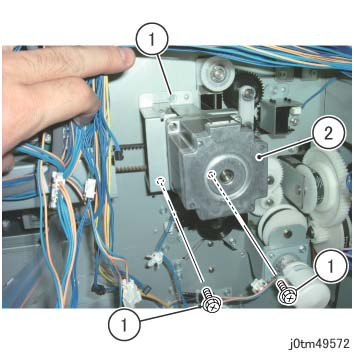
(图 1) tm49572
拆卸E型卡环, 齿轮. (图 2)
拆卸E型卡环, 齿轮.
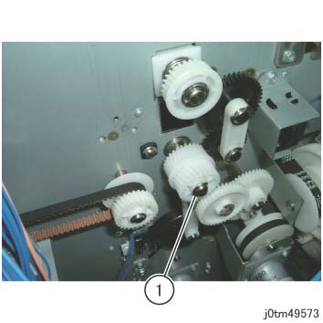
(图 2) tm49573
移动 the 顶部 左侧 盖板 前面 互锁 开关. (图 3)
拆卸螺钉（x2）.
移动 the 顶部 左侧 盖板 前面 互锁 开关.
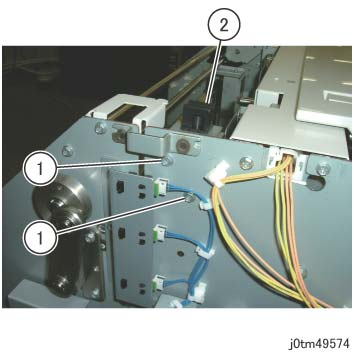
(图 3) tm49574
移动 the 顶部 左侧 盖板 后面 互锁 开关. (图 4)
拆卸螺钉（x2）.
移动 the 顶部 左侧 盖板 后面 互锁 开关.
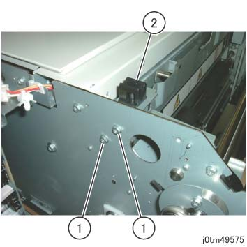
(图 4) tm49575
拆卸 螺钉 该 固定 the 方背 出纸 滑槽. (图 5)
拆卸螺钉（x2）.
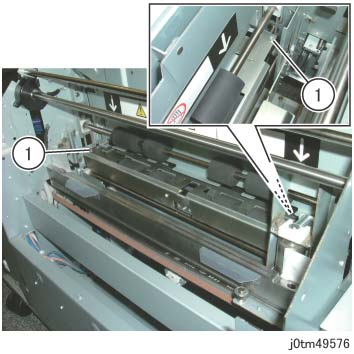
(图 5) tm49576
插入 线束 的 方背 出纸 滑槽 进入 the hole of 框架 在后面. (图 6)
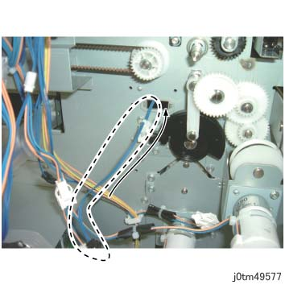
(图 6) tm49577
To 移动 the 按下 辊, 转动 齿轮 Pulley 在后面. (图 7)
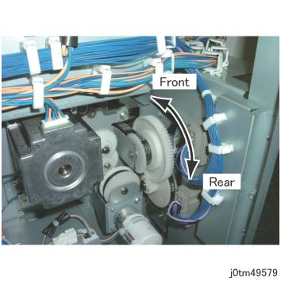
(图 7) tm49579
拆卸 方背 出纸 滑槽. (图 8)
移动 the 按下 辊 in the 方向 的 arrow.
移动 the 按下 辊 in the 方向 的 arrow to 拆卸 方背 出纸 滑槽.
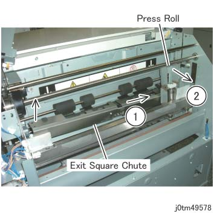
(图 8) tm49578
拆卸E型卡环 的 方背 出纸 下方 辊 在后面. (图 9)
拆卸E型卡环.
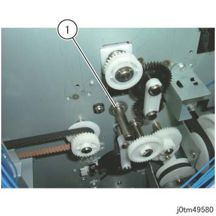
(图 9) tm49580
拆卸E型卡环 of 方背 出纸 下方 辊 在前面. (图 10)
拆卸E型卡环.
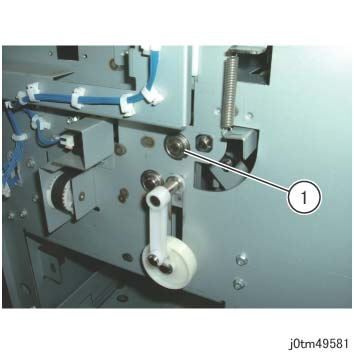
(图 10) tm49581
拆卸 方背 出纸 下方 辊. (图 11)
拆卸 方背 出纸 下方 辊.
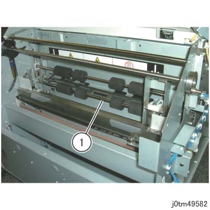
(图 11) tm49582
安装
安装时 the 方背 出纸 滑槽, 插入 线束 的 方背 出纸 滑槽 进入 the hole in 框架. (图 12)
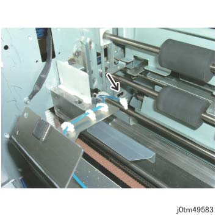
(图 12) tm49583
安装 方背 出纸 滑槽 by 以下步骤. (图 13)
放下 杠杆.
安装 使用 Dust Hold 滑槽 facing up.
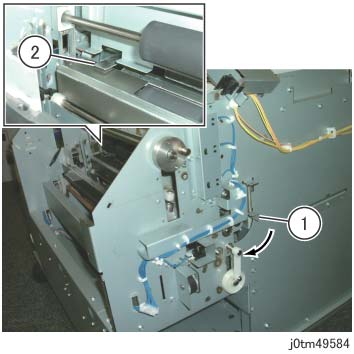
(图 13) tm49584